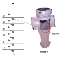

2022年
問題131 排水トラップと間接排水に関する次の記述のうち，最も不適当なものはどれか．
（1）間接排水管の配管長が，1,500mmを超える場合は，悪臭防止のために機器・装置に近接してトラップを設ける．
（2）飲料用水槽において，管径100mmの間接排水管に設ける排水口空間は，最小150mmとする．
（3）洗濯機の間接排水管の端部は，排水口空間を確保，あるいは排水口開放とする．
（4）排水トラップの脚断面積比(流出脚断面積/流入脚断面積)が小さくなると，封水強度は大きくなる．
（5）使用頻度の少ない衛生器具に設置するトラップには，封水の蒸発による破封を防ぐため，トラップ補給水装置を設置する．
2022年
問題131 正解（4） 頻出度AAA
排水トラップの脚断面積比\(\left(=\dfrac{{\rm流出脚断面積}}{{\rm 流入脚断面積}}\right)\)が小さくなると，封水強度は小さくなる．
排水管内に正圧又は負圧が生じたときの封水保持能力を，トラップの封水強度という．断面積比の大きい，すなわち出口側が大きいトラップは，満管になりにくく流速も遅くなるので，サイホン現象が起きにくく破封しにくい（封水強度が大きい）．2022-131-1図参照．
2022-131-1図 トラップ

トラップが破封すると排水管下流の下水ガスが室内に充満してとても居住できなくなる．又，衛生害虫も容易に侵入するようになる．
トラップの破封防止が通気設備の重大な使命である．
トラップはサイホントラップと非サイホントラップに分類される（2022-131-2図，2022-131-3図参照）．
2022-131-2図 サイホントラップ

Pトラップ，Sトラップ，Uトラップ等の管トラップはサイホントラップといわれ，水が流れる時，管の中が満水となるので自己サイホン作用により封水損失を起こしやすいが，小形で自掃作を有する．
2022-131-3図 非サイホントラップ

ドラムトラップ，わんトラップ，ボトルトラップ等は非サイホントラップといわれ，サイホン現象が起きにくく，封水強度が大きい．
-(1) 間接排水管の配管長が，1,500mmを超える場合（2022-131-4図参照）．
2022-131-4図 間接排水管が1,500mmを超える場合
-(2) 最小排水口空間2022-131-1表参照．
2022-131-1表 最小排水口空間
| 間接排水管の管径［mm］ | 排水口空間［mm］ |
| 25以下 | 最小50 |
| 30～50 | 最小100 |
| 65以上 | 最小150 |
| 各種飲料水用の給水タンク等 | 最小150 |
-(3) 排水口開放でもよい機器は，2022-131-2表参照．
2022-131-2表 間接排水とする器具等
| 区分 | 機器名称 | |
| サービス用機器 | 飲料用 | 水飲み器，飲料用冷水器，給茶器，浄水器 |
| 冷蔵用 | 冷蔵庫，冷凍庫 ，その食品冷蔵・冷凍機器 | |
| 厨房用 | 皮むき機，洗米機，製氷器，食器洗浄機，消毒器，調理用，流し（食材を溜め洗いするシンク等） | |
| 洗濯用 | 洗濯機◎，脱水機◎，洗濯機パン◎ | |
| 医療･研究用機器 | 蒸留水装置，滅菌水装置，滅菌器，滅菌装置，消毒器，洗浄機等 | |
| 水泳プール | プール自体の排水，オーバフロー排水，ろ過装置逆洗水，周辺歩道の床排水◎ | |
| 噴水 | 噴水自体の排水◎，オーバフロー排水◎，ろ過装置逆洗水◎ | |
| 配管・装置の排水 | 貯水槽・膨張水槽のオーバフロー及び排水 上水・給湯・飲料用冷水ポンプ及び露受け皿の排水◎ 上水・給湯・飲料用冷却水系統の水抜き 圧力水槽用逃がし弁及び貯湯槽からの排水 消火栓系統及びスプリンクラー系統の水抜き◎ 冷凍機◎，冷却塔◎，熱媒として水を使用する装置及び空気調和機器の排水◎ 上水用水処理装置の排水 | |
| 温水系統等の排水 | 貯湯槽・電気温水器からの排水 ボイラ◎，熱交換器◎及び蒸気管のドリップ等の排水◎ |
|
※◎印は，「排水口開放」でも良い機器．
-(2) 特殊継手排水システムは伸頂通気方式を改良したもので，排水横枝管の接続に特殊継手を用いる．
特殊継手は内部に旋回羽根を持ち，各横枝管からの排水を立て管の内面に旋回流で流し，流速を抑えるとともに管中央部に通気のための空間を確保して，排水をスムースに流そうとするものが多い．枝管への接続器具数があまり多くない集合住宅等に多く採用されている（2022-131-5図参照）．
2022-131-5図 特殊継手排水システム

出典 SEKISUI CHEMICAL CO., LTD
https://www.eslontimes.com/system/items-view/31/
を基に作成
-(5) 封水の蒸発も破封の原因の一つである（2022-131-6図参照）．
2022-131-6図 破封の原因

破封の原因と対策については次のとおり．
1．自己サイホン作用による破封の対策には各個通気を設置する．
2．誘導サイホン作用，はね出し作用による破封の対策は有効な通気をとること．
3．蒸発による封水損失は月20～25mmである．トイレなどの床排水口で起きる．対策としては，封水補給装置または栓をする．
4．毛管現象とは，トラップに付着した髪の毛，糸くずなどを伝わって封水が逃げてしまう現象．対策は排水口で毛髪などの流出を阻止する，頻繁な掃除を行うなど．
5．底面の勾配のゆるい水受け容器は排水の流速が小さいので自己サイホンを起こしにくい．また絞れ水が封水の補給水となる．